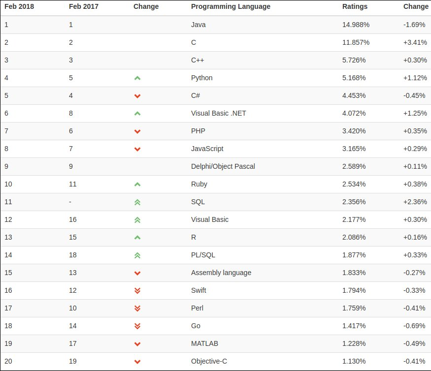
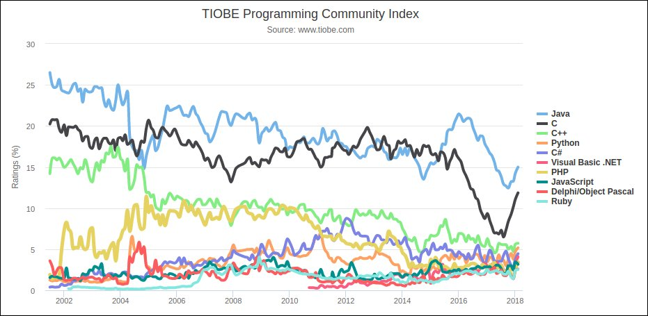
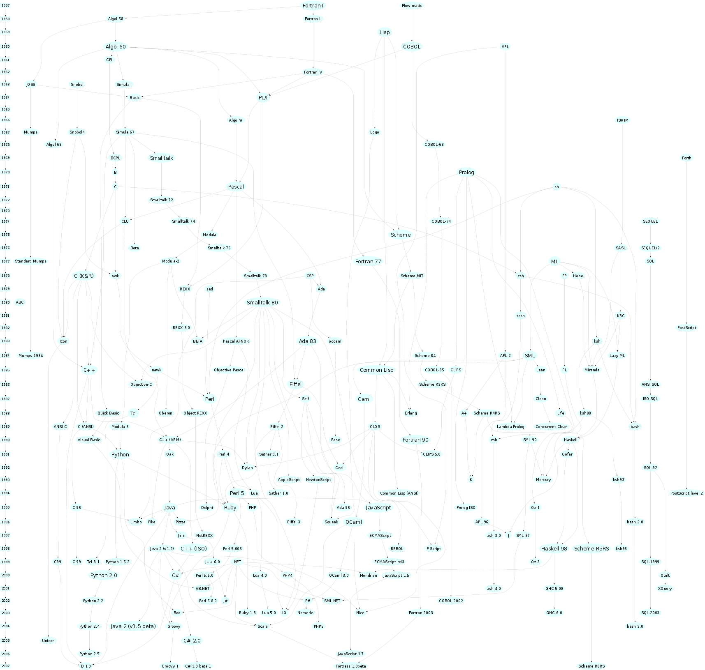
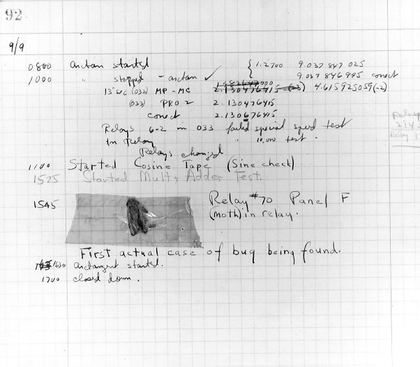

Linguagens e Ambientes de Programação (2017/2018)
Teórica 01 (06/mar/2018)
Apresentação da disciplina.
Discussão introdutória sobre alguns aspetos importantes da temática das Linguagens de Programação.
Sequência da apresentação da matéria de LAP, ao longo do semestre
- Paradigma de programação funcional. Linguagem OCaml (fragmento funcional).
- Plataformas computacionais. Técnicas de implementação de linguagens de programação.
- Ligações, ambientes, âmbitos.
- Programação imperativa com acesso direto aos recursos da máquina e muitos outros aspetos úteis. Linguagem C.
- Modelo de execução para linguagens com aninhamento de funções.
- Paradigma orientado pelos objetos no contexto duma linguagem de scripting. Linguagem JavaScript.
- Programação multiparadigma (funcional + imperativa + objetos) em JavaScript.
- Um pouco de programação para a Web em JavaScript.
- Interoperabilidade entre JavaScript e Java.
- Sistemas de tipos. Polimorfismo.
- Ambientes de programação.
Dimensões do estudo das Linguagens de Programação
- Sintaxe - Estuda as construções válidas da linguagem, independentemente do significado dessas construções. Os tópicos mais importantes são a especificação formal da sintaxe e o desenvolvimento de técnicas de reconhecimento eficientes. Por uma questão prática, a sintaxe costuma ser tratada a dois níveis:
- Nível independente de contexto - Considera apenas a estrutura dos termos da linguagem. Especifica-se usando gramáticas independentes do contexto ou outras técnicas.
- Nível contextual - Considera também as restrições de contexto, como por exemplo "um identificador só pode ser usado depois de declarado". Especifica-se usando gramáticas de atributos ou outras técnicas.
- Semântica - Estuda o significado das construções duma linguagem ou seja os efeitos da execução dos programas. Por vezes descreve-se a semântica informalmente, mas existem muitas técnicas formais em uso: gramáticas de atributos, semântica operacional estruturada, semântica matemática, semântica axiomática, etc.
- Pragmática - Estuda tudo o que se relaciona com o uso prático das linguagens incluindo: como usar bem uma linguagem; análise critica das vantagens e desvantagens práticas de cada mecanismo; como escolher a melhor linguagem para resolver um dado problema?
A cadeira LAP concentra-se na pragmática e, de forma subsidiária, na semântica informal.
Porque há tantas Linguagens de Programação?
Realmente existem milhares de linguagens de programação diferentes. Eis algumas razões:
- Juventude da Informática - A Informática é uma disciplina recente, e estão constantemente a ser descobertas novas e melhores maneiras de fazer as coisas.
- Domínios de aplicação - A maioria das linguagens são de uso geral, mas mesmo assim cada uma delas tende a estar mais bem adaptada à resolução de certos problemas.
- O Lisp, ML e Prolog são ótimos para manipulação simbólica e para aplicações de IA.
- O C é ótimo para programação de sistemas.
- O Java e C# são ótimos para desenvolver aplicações com interface gráfico e que correm na WEB.
- O C++ é excelente para programar jogos de vídeo sofisticados e rápidos.
- O CDuce é excelente para processar documentos XML.
- Preferência pessoal - A diversidade de preferências pessoais contribui para a diversidade de linguagens.
- Há quem prefira pensar recursivamente mas outros preferem usar iteração.
- Há quem esteja habituado aos apontadores do C e C++ e goste deles mas outros preferem a desreferenciação implícita do Java e do ML.
- Há quem aprecie a simplicidade, compacidade e enorme flexibilidade do C, mas outros preferem usar linguagens com sistemas de tipos mais seguros como o Java ou ML.
- Há quem considere que o C++ é o melhor compromisso entre a possibilidade de programar com classes e criar programas muito eficientes, mas outros preferem a maior simplicidade e consistência da linguagem Java, não dispensando também a sua extensa biblioteca de classes.
Qualidade duma Linguagem de Programação
Eis alguns critérios de avaliação de qualidade:
- Legibilidade - Facilidade em, através do exame de um programa, seguir a sua lógica e descobrir a presença de erros. Muito importante para a manutenção dos programas.
Para isso são importantes os seguintes fatores:
- Simplicidade - Ajuda a conhecer bem a linguagem, em todos os seus detalhes.
- Ortogonalidade - Este termo descreve o fenómeno dum conjunto de primitivas pode ser combinado dum número de formas conhecido, sendo legítimas todas as combinações imagináveis. Pode ser uma forma habilidosa de combinar simplicidade com expressividade, desde que o número de primitivas e de combinações sejam pequenos.
- Estruturas de Controlo - Os seus efeitos devem ser claros e fáceis de descrever. Cuidado com a instrução 'goto'.
- Estruturas de dados - Devem ser suficientemente claras para ajudar a perceber as intenções contidas nos programas.
- Sintaxe - Para diferentes significados usar formas sintáticas diferentes.
- Redigibilidade - Possibilidade de expressar os problemas de uma forma natural, sem que a atenção do programador seja desviada por detalhes ou "truques" da linguagem.
Para isso são importantes os seguintes fatores:
- Simplicidade - Assim há menos hipóteses de cometer erros.
- Expressividade - Convém que haja suporte natural (direto) para o estilo de programação usado.
- Ortogonalidade - Ajuda a que não se perca tempo a pensar em exceções às regras gerais da linguagem.
- Estruturas de Controlo - Devem ser suficientemente diversas para permitir expressividade.
- Estruturas de dados - Devem ser suficientemente diversas para facilitar a expressividade. Mas cuidado com determinados mecanismos, como os apontadores.
- Suporte para abstração - Ajuda a dominar a complexidade dos problemas pois permite esquecer os detalhes que não são importantes em cada contexto. Os humanos não conseguem abarcar ao mesmo tempo todos os detalhes duma entidade complexa.
- Sintaxe - Não deve haver restrições desnecessárias, e.g. comprimento dos identificadores.
- Segurança - Possibilidade de escrever programas que deem garantias de que atingem o efeito desejado, ou seja que obedecem à sua especificação (em todas as situações).
Para isso são importantes os seguintes fatores:
- Verificação de tipos - Estática ou dinâmica, há vantagem e desvantagens em cada um delas. Sistemas de tipos estático detetam todas as incompatibilidades de tipo em tempo de compilação, o que é bom, mas também excluem algumas situações legítimas. Sistemas de tipos dinâmicos descobrem os erros de tipo só em tempo de execução, mas podem funcionar bem se os programas forem desenvolvidos seguindo uma metodologia de unit tests.
- Exceções - Tratamento de erros e de situações excecionais ajuda a que o programa funcione de acordo com o esperado em TODAS as situações.
- Aliasing (sinonímia) - Fator negativo. Permite flexibilidade mas pode ser perigoso deixar uma mesma entidade ser conhecida por dois nomes diferentes.
- Eficiência - Atualmente a eficiência já não é mais medida apenas com base velocidade de execução dos programas e na economia no uso da memória. Considera-se também o esforço necessário para produzir os programas e o esforço necessário para os manter.
- Rigor - A definição da linguagem deve ser rigorosa, para não levantar dúvidas aos implementadores e aos utilizadores.
Popularidade das Linguagens de Programação atuais
O site Tiobe calcula mensalmente um índice de popularidade de Linguagens de Programação.Citação: "The ratings are based on the world-wide availability of skilled engineers, courses and third party vendors. The popular search engines Google, MSN, Yahoo!, and YouTube are used to calculate the ratings."
Popularidade em Fev/2018

Evolução da popularidade ao longo dos anos

História: Linguagem máquina
No final da década de 40, não existiam alternativas ao uso de linguagem máquina.
Características
- Instruções especificadas por meio de códigos numéricos, em binário.
- Utilização direta de endereços absolutos nos programas.
Discussão
- Programas difíceis de escrever e quase impossíveis de ler.
- Grande facilidade em cometer erros.
- Os programas só funcionam no tipo específico de hardware para que foram escritos.
- Dificuldade em inserir ou remover instruções nos programas, por causa dos endereços absolutos (a instrução nop ajuda a minorar um pouco este problema).
História: Assemblers
Começaram a surgir no início dos anos 50.
Características
- Começaram a surgir no início dos anos 50.
- Permitem atribuir nomes a códigos de operação (mnemónicas), a localizações de memória (etiquetas) e a constantes.
- Um tradutor - chamado assembler - traduz instruções assembler em instruções máquina.
- Um programa pode conter diretivas que não dão origem a código: declaração de constantes, por exemplo.
Discussão
- Os aspetos negativos mais dramáticos da linguagem máquina ficam minorados.
- No entanto os programas continuam a ser difíceis de escrever e de ler.
- Os programas também continuam a ter de ser escritos para arquiteturas particulares.
- Mas já se observam algumas "sementes" das futuras linguagens de programação.
Exemplo: Programa "fatorial" escrito para o Pentium
.file "fact.c"
.section .rodata
.LC0: .string "> "
.LC1: .string "%d"
.LC2: .string "fact(%d) = %d\n"
.text
.globl main
.type main, @function
pushl %ebp
movl %esp, %ebp
subl $40, %esp
andl $-16, %esp
movl $0, %eax
addl $15, %eax
addl $15, %eax
shrl $4, %eax
sall $4, %eax
subl %eax, %esp
movl $.LC0, (%esp)
call printf
leal -12(%ebp), %eax
movl %eax, 4(%esp)
movl $.LC1, (%esp)
call scanf
movl $1, -4(%ebp)
movl $1, -8(%ebp)
jmp .L2
.L3: movl -4(%ebp), %eax
imull -8(%ebp), %eax
movl %eax, -4(%ebp)
leal -8(%ebp), %eax
addl $1, (%eax)
.L2: movl -12(%ebp), %eax
cmpl %eax, -8(%ebp)
jle .L3
movl -12(%ebp), %edx
movl -4(%ebp), %eax
movl %eax, 8(%esp)
movl %edx, 4(%esp)
movl $.LC2, (%esp)
call printf
movl $0, %eax
leave
ret
.size main, .-main
História: Fortran

John Backus
O Fortran foi anunciado por John Backus da IBM em 1954. A implementação inicial, designada Fortran I, ficou disponível em 1957, com compiladores para IBM 704 e IBM 709.
Prometia
- Eficiência dos programas escritos em assembler. [Quase! O Fortran sempre foi conhecido pela excelente qualidade do código gerado pelos seus compiladores.]
- Simplificar a escrita de programas mediante o uso de notação matemática (Fortran = "FORmula TRANslator"). [Confirmou-se!]
- Eliminar praticamente todos os erros de programação. [Mentira!]
Características
- Instruções de controlo pobres e influenciadas pelas instruções da máquina IBM 704. Necessário recorrer muito à instrução goto.
- Suporte para inteiros, reais e arrays, mas não para registos (records).
- Suporte para variáveis estáticas. Impossível criar novas variáveis em tempo de execução.
- Suporte para sub-rotinas não recursivas.
Discussão
- Depois do Fortran I foram surgindo versões melhoradas: Fortran II em 1958, Fortran IV em 1962, Fortran 77 em 1978 e Fortran 90 em 1990.
- Tornou-se na primeira linguagem de programação popular e, a partir do início dos anos 60, mudou de forma revolucionária a forma como os computadores eram usados.
- Ainda é bastante usada atualmente em aplicações de cálculo numérico!
- Passou a ser possível escrever programas portáveis!
Exemplo: Programa "fatorial" escrito em Fortran
READ 10,I
10 FORMAT(I3)
J=1
DO 20 K=1,I
J=J*K
20 CONTINUE
PRINT 10,J
STOP
História: Outras linguagem pioneiras
Comité do Algol 60
Início dos anos 60.
- Algol 60 - Primeiro passo em direção à sofisticação das linguagens modernas.
- Lisp - Dominou as aplicações de IA durante 25 anos.
- Cobol - Linguagem das empresas e do DoD.
- Basic - Muito simples de aprender, destinada a não especialistas.
Mais um pouco de história
Ver: Key Events in the History of Computing
Algumas linguagens de 1957 até 2007

O primeiro bug :)
Provavelmente, foi em 1947 que o termo bug foi pela primeira vez associado de forma explícita (e usando ironia) aos computadores "modernos". Um computador Mark II bloqueou porque uma traça ficou presa num comutador mecânico.

Mas a palavra bug sempre foi associada a mecanismos defeituosos. Pense no Bugs Bunny, criado em 1940, e cujo nome significa coelho "com bugs", ou seja coelho avariado ou coelho maluco.
#100